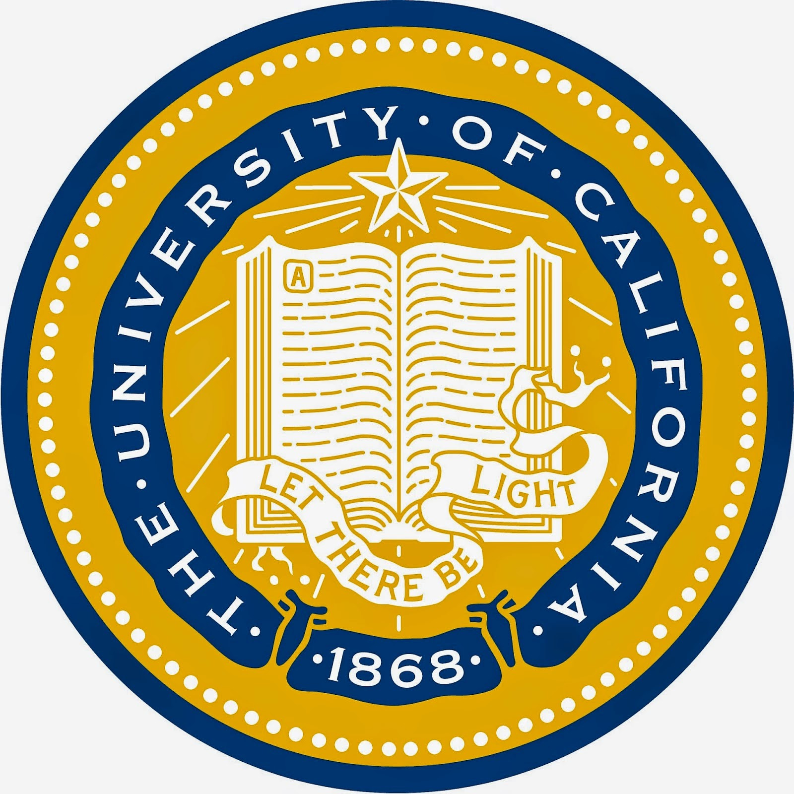
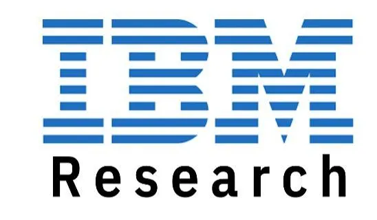
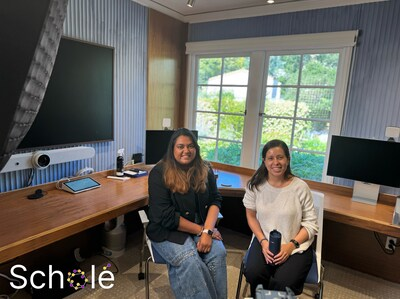
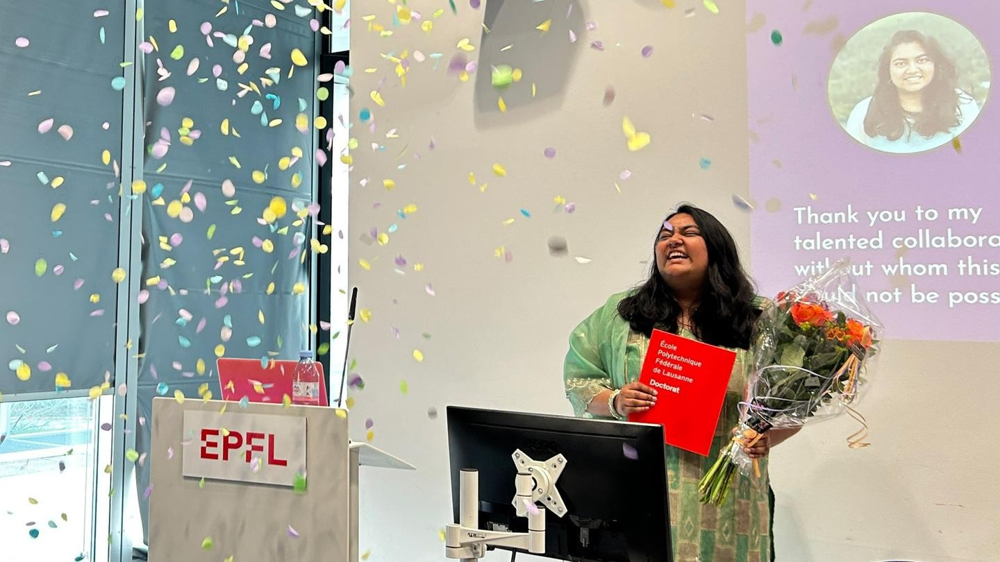
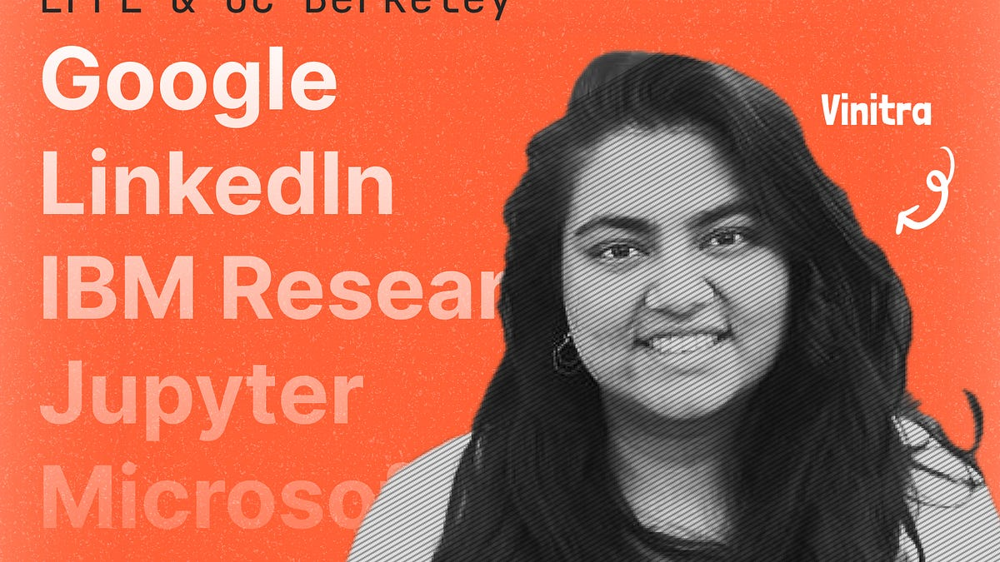
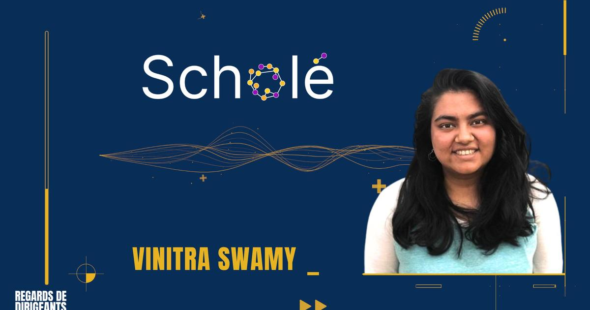
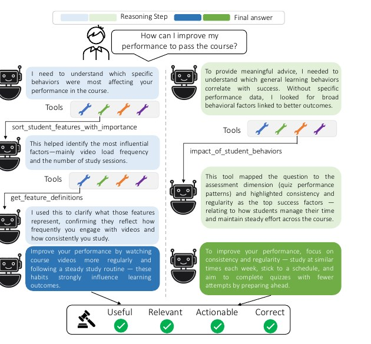
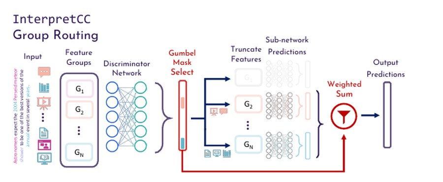
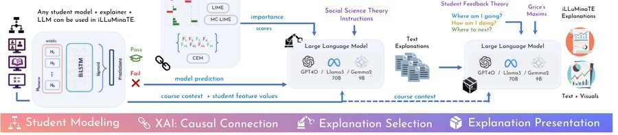
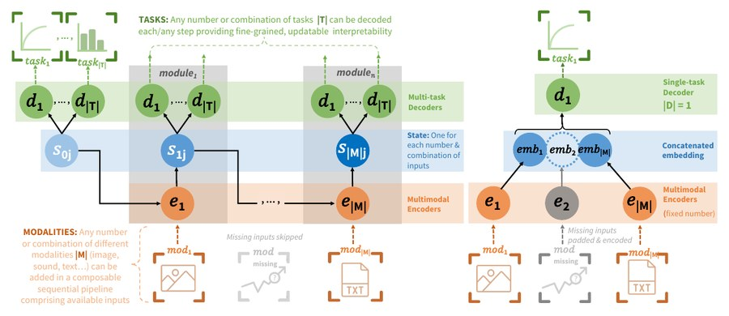

Vinitra Swamy
Hi there! I'm an AI researcher, CEO and co-founder of the AI for education spin-off
Scholé AI.
I also teach
 Harvard's Agentic AI Intensives
alongside some stellar faculty.
Harvard's Agentic AI Intensives
alongside some stellar faculty.
I earned my PhD in Computer Science at in 2025, co-advised by Prof. Tanja Käser and Prof. Martin Jaggi. My PhD research was awarded the Patrick Denantes Prize for EPFL's best CS thesis (read the thesis), and I was also fortunate to be named a Rising Star in Data Science by Stanford University.
Before Switzerland, I spent two years at Microsoft AI as a lead engineer for the Open Neural Network eXchange (ONNX) project, collaborating with more than 30 leading tech companies, including Nvidia, Intel, Amazon, and Meta, to help establish an industry standard for AI interoperability.
My claim to fame (😂) is graduating at 20 as the youngest M.S. in Computer Science recipient in
UC Berkeley's history. Since then, I've taught AI and machine learning at
 ,
,
 ,
,

, and .I love people, data, and working on exciting problems at the intersection of the two:
- ML for education (personalized learning, autograding, knowledge tracing)
- Explainable and interpretable AI
- Generalized learning (transfer learning, multimodal learning)
Thank you for taking time from your day to find out what I do with mine!

Scholé AI raises $3M to transform workforce learning in the age of AI

Patrick Denantes Memorial Prize for EPFL's best computer science thesis

Google, LinkedIn, Microsoft, and now EPFL PhD: Vinitra's incredible journey
G-Research PhD Prize winner at EPFL

Learning in the age of AI: how Scholé is rethinking workplace education
Selected Research
✨🎓 My PhD thesis on "A Human-Centric Approach to Explainable AI for Personalized Education" is now available!
For a full list of publications, please visit my Google Scholar page.
During my PhD, I was fortunate to be recognized by Stanford, UCSD and UChicago as a "Rising Star in Data Science", and awarded the GResearch PhD Award, the IC Distinguished Service Award three times, and most recently the Patrick Denantes Memorial Prize for EPFL's best CS thesis.
Turning 500+ Students into Teachers
Who Gives Feedback Matters
User-Driven XAI in Education & Human Agency
Scenario-Based Learning Through and With AI

SCRIBE: Structured Chain Reasoning with Tool Calling

InterpretCC: User-Centric Interpretability via Mixture-of-Experts

iLLuMinaTE: From Explanations to Action
Viewpoint: Future of Human-Centric XAI
Measuring Student Trust in AI-Powered EdTech
A Human-Centric Approach to Explainable AI for Personalized Education
2nd Human-Centric XAI in Education Workshop
BloomTutor: Retrieval Augmentation for Bloom's Taxonomy Question Generation
AI or Human? Student Feedback Perceptions
Interpret3C: Interpretable Student Clustering
Student Answer Forecasting

MultiModN: Multimodal, Multi-Task, Interpretable Modular Networks
MEDITRON-70B: Scaling Medical Pretraining for LLMs
Unraveling Downstream Gender Bias from LLMs: A Study on AI Educational Writing Assistance
Trusting the Explainers
RIPPLE: Concept-Based Interpretation for Raw Time Series
Bias at a Second Glance
Evaluating the Explainers
Meta Transfer Learning for Early Success Prediction
Interpreting Language Models Through Knowledge Graph Extraction
ONNX: Open Neural Network eXchange
ML for Humanitarian Data: Tag Prediction with HXL
Deep Knowledge Tracing for Student Code Progression
Pedagogy, Infrastructure & Analytics for Data Science at Scale
CSi2: Idle Server Identification
Industry
Scholé AI
Building personalized learning at scale. We recently raised $3M in venture funding, and launched as #1 product of the day on ProductHunt. Check out our multi-agent lesson delivery!
Microsoft AI
Working on a framework for deep learning / ML framework interoperability (ONNX) alongside an ecosystem of converters, containers, and inference engines.
Lead of the inter-company ONNX Special Interest Group (SIG) for Model Zoo and Tutorials with Microsoft, Intel, Facebook, IBM, nVidia, RedHat, and other academic and industry collaborators.
Presented and represented Microsoft AI at several conferences: WIDS 2020, Microsoft //Build 2019, KDD 2019, Microsoft Research Faculty Summit 2019, UC Berkeley AI for Social Impact Conference 2018, Women in Cloud Summit 2018, RISECamp 2018
Berkeley Institute for Data Science (BIDS), RISELab
Worked on projects in AI + Systems with an application area of data science education. Project areas include JupyterHub architecture, custom deployments, OkPy autograding integration, Jupyter noteboook extensions, and D3.js / PlotLy visualizations for data science explorations of funding and enrollment data.
IBM Research
Worked on the CSi2 project as a Machine Learning Research Scientist intern on the Hybrid Cloud team. The CSi2 algorithm is an ensemble machine learning algorithm to detect inactivity of VMs as well as suggest a course of action (i.e. termination, snapshot). It is projected to save IBM Research at least $3.2 million dollars with 95.12% recall and 88% F1 score (>> industry standard) and is being implemented into the Watson Services Platform. Collaborated with Neeraj Asthana, Sai Zheng, Ivan D'ell Era, Aman Chanana. Presented an exit talk and filed 2 patents.
 LinkedIn
LinkedIn
Interned at LinkedIn headquarters with the Growth Division's Search Engine Optimization (SEO) Team the summer before entering UC Berkeley. Worked on fullstack testing infrastructure for the public profile pages, as well as a Hadoop project; outside of assigned work, helped plan LinkedIn’s DevelopHER Hackathon and worked on several Market Research/User Experience Design initiatives.
 Google
Google
Spent a summer learning computer science fundamentals and shadowing engineers through the CAPE high school internship program at Google Headquarters in Mountain View, CA. Chosen as a Google Ambassador for Computer Science following the experience. Worked with Google, Salesforce, and AT&T to introduce coding to over 15,000 girls across California with the Made w/ Code Initiative.
Education
École Polytechnique Fédérale de Lausanne
- President of EPFL PhDs in Computer Science (EPIC)
-
Advised by Prof. Tanja Käser at the ML4ED Lab
and Prof. Martin Jaggi at the MLO Lab - EDIC Computer Science Fellowship Recipient
- EPFL IC Distinguished Service Award (3-time Recipient)
- Elected CS PhD Representative (EDIC Committee under Prof. Ed Bugnion)
University of California, Berkeley
- President of Computer Science Honor Society (UPE)
- ✨🗞️Head Graduate Student Instructor of Data 8 (Foundations of Data Science)
- Research Assistant, Graduate Opportunity Fellow at RISELab
- Advisor: Dean of Data Sciences, David Culler
University of California, Berkeley
- EECS Award of Excellence in Undergraduate Teaching and Leadership
- UC Berkeley Alumni Leadership Scholar
- Graduated 2 years early
Teaching Experience
Teaching Faculty for Harvard DSI AI Intensives
- Teaching Faculty to 1000s of professionals around the world through Harvard Data Science Initiative's GenAI, Agentic AI, and AI Leadership Intensives. Forbes recently recommended the course as the top way to learn agents in 2026! Early Career Board for the Harvard Data Science Review.
Guest Lecturer, TA for Machine Learning for Behavioral Data (CS 421)
- Spring 2026: Guest Lecturer on eXplainable AI for CS 421 - Machine Learning for Behavioral Data
- Fall 2022, 2023: TA for AICC 1 - Advanced Information, Computation, and Communication with Tanja Käser
- Spring 2022, 2023: TA for CS 421 - Machine Learning for Behavioral Data with Tanja Käser
- Fall 2021: TA for CS 401 - Applied Data Analysis with Bob West
- Spring 2021: TA for CS 322 - Introduction to Database Systems with Anastasia Alaimaki and Christoph Koch
Adjunct Faculty for CSE/STAT 416: Introduction to Machine Learning
- Lecturing to 100+ upper-division undergraduate and graduate students on a practical introduction to machine learning. Modules include regression, classification, clustering, retrieval, recommender systems, and deep learning, with a focus on an intuitive understanding grounded in real-world applications.
Lecturer for Data 8: Foundations of Data Science
- ✨🗞️ Lecturing to 250+ undergraduate students on fundamentals of statistical inference, computer programming, and inferential thinking.
[Data 8 Website] [Course Offering] [Course Materials / Code]
Head TA for Data 8: Foundations of Data Science
- ✨🗞️ TA / Head Graduate Student Instructor (GSI) of Data 8 for 4 semesters, responsible for management of 1000+ undergraduates, 40 GSIs, 30 tutors, and 100+ lab assistants each semester.
- ✨🗞️ Helped create data science curriculum material for lecture and domain-specific seminar courses.
- ✨🗞️ In charge of developing JupyterHub infrastructure for 1500+ active users (with Jupyter Servers with Docker/Kubernetes backend on top of various cloud providers including Google Cloud, Azure, and AWS).
Organizing Team
HEXED Workshop Organizer @ EDM 2024
WiML Program Chair @ ICML 2022
FATED Workshop Organizer @ EDM 2022
Reviewer / Program Committee
AIED Program Committee 2023, 2024
AIED 2021*, 2022* (Subreviewer for Tanja Käser)
EMNLP BlackBoxNLP 2021, 2022, 2023
NeurIPS 2024
NeurIPS GenBench 2022, 2023, GAIED 2023, and XAI Workshops 2023, 2024
EACL 2022
EDM Program Committee 2023, 2024
Journal of Educational Data Mining (JEDM) 2022, 2023
LAK 2022*, 2023* (Subreviewer for Tanja Käser)
Editor for Springer Series on Big Data Management (Educational Data Science)
Working Groups
Fairness Working Group @ EDM 2022
WiML Workshop Team @ NeurIPS 2021
Lead of the 2020 ONNX SIG for Models and Tutorials